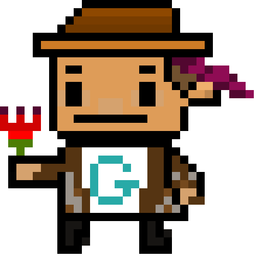

New pixel future
Backend Go Developer
I design stable backend architecture, clean APIs, and production-focused services. Minimal noise. Maximum reliability.
Status: Building resilient systems with Go, clear structure, and long-term maintainability.
